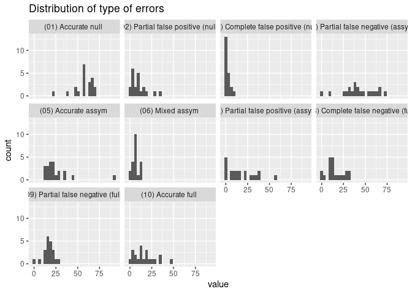
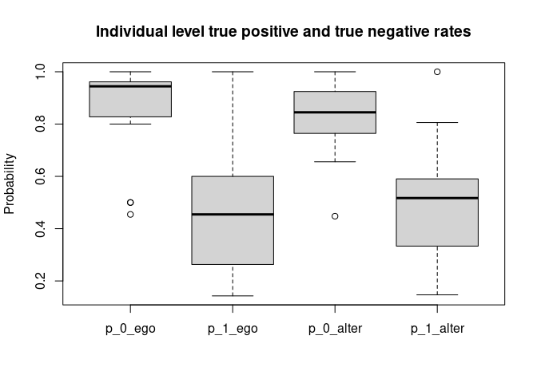

The goal of imaginarycss is to …
You can install the released version of imaginarycss from CRAN with:
install.packages("imaginarycss")And the development version from GitHub with:
# install.packages("devtools")
devtools::install_github("gvegayon/imaginary-structures")This is a basic example which shows you how to solve a common problem:
library(imaginarycss)
source_ <- c(1, 2, 3, 1)
target_ <- c(2, 1, 4, 4)
source_ <- c(source_, source_[-1] + 4)
target_ <- c(target_, target_[-1] + 4)
adjmat <- matrix(0L, nrow = 8, ncol = 8)
adjmat[cbind(source_, target_)] <- 1L
graph <- new_barry_graph(adjmat, n = 4)
graph
#> A barry_graph with 2 networks of size 4
#> . . 1.00 . 1.00 . . . .
#> 1.00 . . . . . . .
#> . . . 1.00 . . . .
#> . . . . . . . .
#> . . . . . . . 1.00
#> . . . . 1.00 . . .
#> . . . . . . . 1.00
#> . . . . . . . .
# These are two attributes that are part of the barry_graph object
attr(graph, "endpoints")
#> [1] 8
attr(graph, "netsize")
#> [1] 4
count_recip_errors(graph)
#> id name value
#> 1 0 Partially false recip (omission) (0) 1
#> 2 0 Partially false recip (comission) (0) 0
#> 3 0 Completely false recip (omission) (0) 0
#> 4 0 Completely false recip (comission) (0) 0
#> 5 0 Mixed reciprocity errors (0) 0
#> 6 0 (01) Accurate null (0) 3
#> 7 0 (02) Partial false positive (null) (0) 0
#> 8 0 (03) Complete false positive (null) (0) 0
#> 9 0 (04) Partial false negative (assym) (0) 0
#> 10 0 (05) Accurate assym (0) 2
#> 11 0 (06) Mixed assym (0) 0
#> 12 0 (07) Partial false positive (assym) (0) 0
#> 13 0 (08) Complete false negative (full) (0) 0
#> 14 0 (09) Partial false negative (full) (0) 1
#> 15 0 (10) Accurate full (0) 0
krack_data <- read.csv("data-raw/advice_nets.csv")
krack_data <- as.matrix(krack_data)
n <- 21
krack_adjmat <- matrix(0L, nrow = n * 22, ncol = n * 22)
krack_adjmat[krack_data] <- 1L
graph <- new_barry_graph(
krack_adjmat,
n = n
)
ans <- count_recip_errors(graph)
head(ans)
#> id name value
#> 1 0 Partially false recip (omission) (0) 25
#> 2 1 Partially false recip (omission) (1) 78
#> 3 2 Partially false recip (omission) (2) 52
#> 4 3 Partially false recip (omission) (3) 63
#> 5 4 Partially false recip (omission) (4) 56
#> 6 5 Partially false recip (omission) (5) 56Another example passing a list
library(network)
#>
#> 'network' 1.18.1 (2023-01-24), part of the Statnet Project
#> * 'news(package="network")' for changes since last version
#> * 'citation("network")' for citation information
#> * 'https://statnet.org' for help, support, and other information
library(ergmito)
knet <- as.network(krack_adjmat)
knet %v% "id" <- rep(0:n, each = n)
netlist <- splitnetwork(knet, "id")
netlist <- lapply(netlist, as.matrix)
graph2 <- new_barry_graph(netlist)
all(barray_to_edgelist(graph2) ==
barray_to_edgelist(graph))
#> [1] TRUENow checking that none of these coincide completely
# Removing the network id
ans$name <- gsub("\\([0-9]+\\)$", "", ans$name)Checking out the distribution
library(ggplot2)
# keeping the onces from the census only
ans <- subset(ans, grepl("^\\([0-9]", name))
ggplot(data = ans, aes(y = value)) +
geom_histogram() +
facet_wrap(vars(name)) +
coord_flip() +
labs(title = "Distribution of type of errors")
#> `stat_bin()` using `bins = 30`. Pick better value with `binwidth`.
Checking the tie level accuracy
taccuracy <- tie_level_accuracy(graph)
boxplot(
taccuracy[,-1],
main = "Individual level true positive and true negative rates",
ylab = "Probability"
)# Keeping only the ones from the census
# Sampling and using that to generate a new barray graph
graph_sampled <- new_barry_graph(
sample_css_network(graph)
)
microbenchmark::microbenchmark(
sample_css_network(graph)
)
#> Unit: milliseconds
#> expr min lq mean median uq
#> sample_css_network(graph) 11.25291 11.65259 14.32988 12.15657 16.58535
#> max neval
#> 32.85994 100
# Retrieving 1000 samples
set.seed(331)
samp <- replicate(n = 100, sample_css_network(graph), simplify = FALSE)
census <- lapply(samp, \(net) {
count_imaginary_census(new_barry_graph(net))
})We can also separate the counts as a function of whether the perceiver is looking into all ties, only ties including them, or only ties not including them.
census_all <- count_imaginary_census(graph, counter_type = 0)
census_perceiver_only <- count_imaginary_census(graph, counter_type = 1)
census_no_perceiver <- count_imaginary_census(graph, counter_type = 2)
# Should be zero
which_not <- census_all$value -
(census_perceiver_only$value + census_no_perceiver$value)
length(census_all$name[which(which_not != 0)]) == 0L
#> [1] TRUE